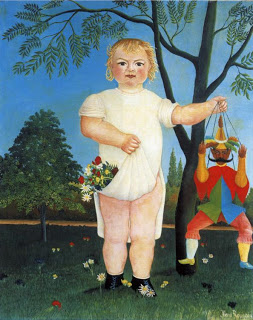

Bava Batra 142 - Only Your Own Unborn Children Can Acquire

Said Rabbi Itzhak in the name of Rabbi Yochanan, "If one grants possession to a fetus, the fetus does not acquire." And if you question this from the Mishna which validated such an acquisition , that Mishna was talking about one's own children. Since one feels especially close to them, his resolve to give is strong enough, but this is not so for someone else's children.
But what about a contradicting rule that "A one-year-old baby inherits and bequeaths", from which we understand that a fetus does not inherit? That rule is talking about a different situation - an inheritance that passes to the baby from his mother, and from him - to his paternal brothers. This type of inheritance cannot pass through an unborn child.
Art: Henri Rousseau - To Celebrate the Baby